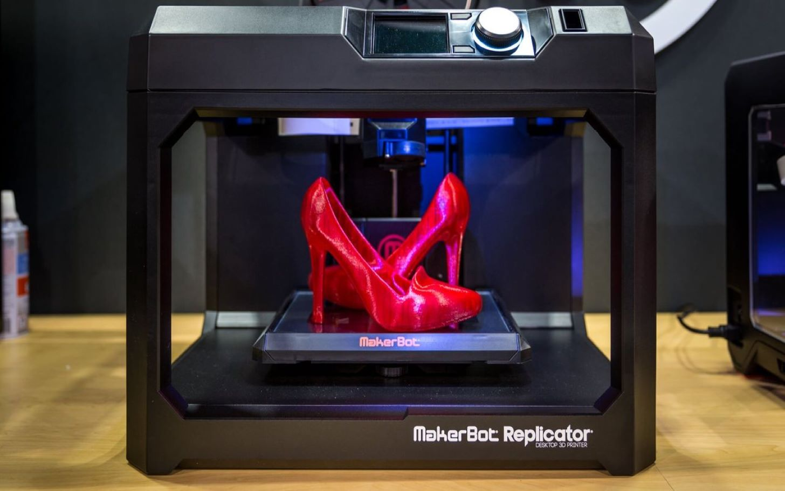
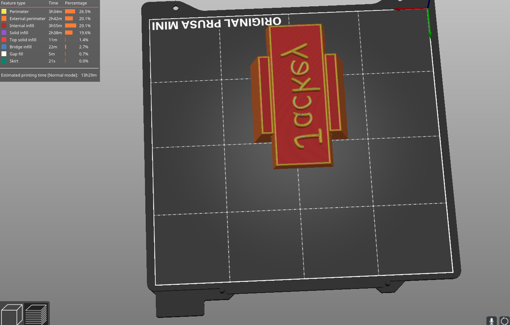
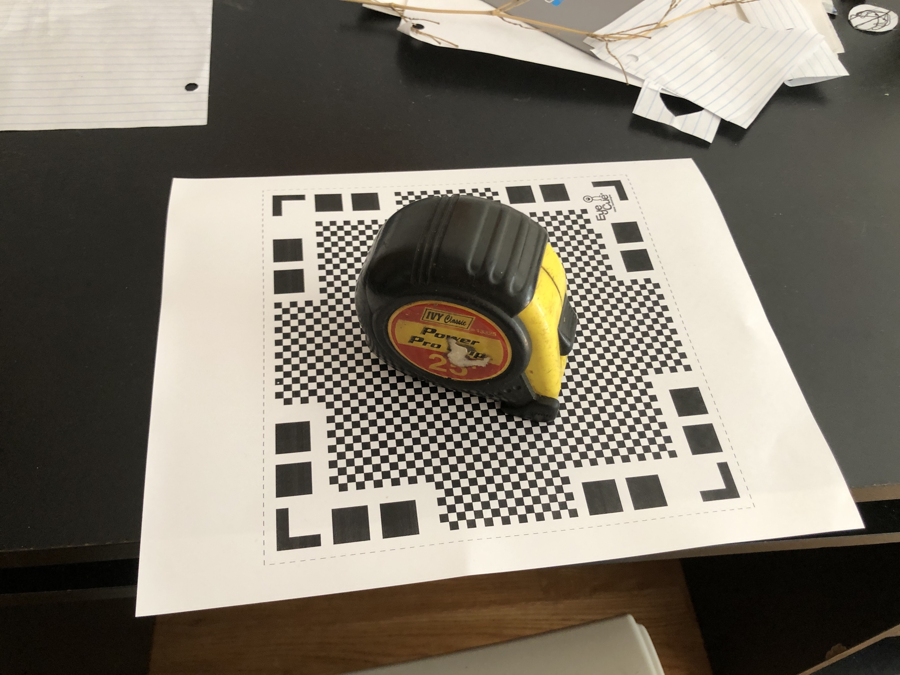

Class 6: 3D Design & Printing

This time, I just followed along to a video of a custom stamp because I felt that I still haven't really grasped completely the fundementals of Fusion360. The build is not very complex but I learned a lot about making your own planes and other functions like smoothing edges out and connecting two circles togethers with the loft. Also, off setting things is a really good way to make things very accurate and it is more practical than I thought. Here's the video that I followed and the model's files.
After finishing with that, I needed to save the STL file to PrusaSlicer where I got the info for how long it would take to print and other logistics.
 Download my STL fileFor the next part of the assignment, I used the app Qlone that requires you to print out their mat to then scan it. I scanned my tape measurer and it was semi-successful. I did end up getting it to scan by going around it but it seemed to be very glitchy and it didn't come out as well as I intented. I also could not download the file without the full version so that's that.
